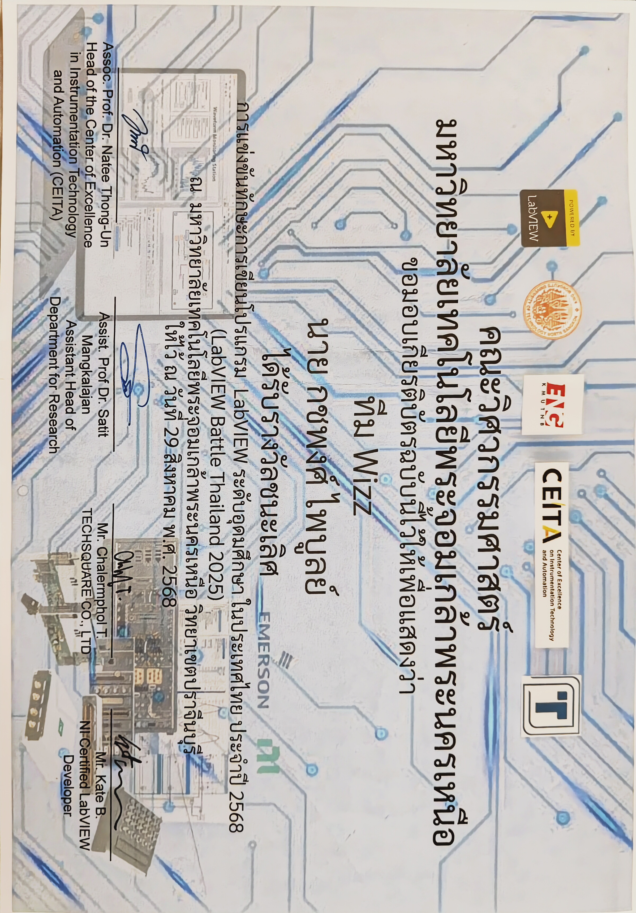
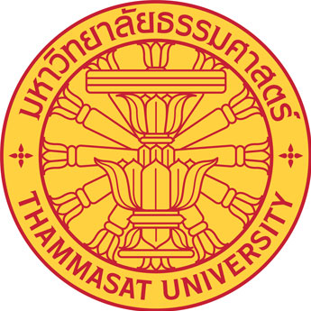

01. About
I am a project engineer with an Electrical Engineering background, focused on electrical systems, industrial automation, project execution, and practical engineering documentation. I am interested in roles that connect design requirements, field constraints, site work, safety, quality, vendors, and maintainable technical solutions.
My strengths align with project engineer roles across power, manufacturing, energy, automation, and industrial systems: breaking down technical requirements, preparing clear documentation, coordinating with stakeholders, supporting installation/testing workflows, and following project details through to handover.
My flagship project is VisionMate, an award-winning accessibility platform for visually impaired users in Thailand. It reflects how I approach engineering work: understand the real user problem, define workflows, coordinate hardware/software/cloud/AI constraints, test practical behavior, and deliver a system that can be explained, supported, and improved.
02. Skills
Electrical & Power Systems
- Electrical Engineering, HV/MV/LV systems, transformer, switchgear, MCC, motor, VFD
- Load calculation, single-line diagram, wiring diagram, grounding, electrical standards
- FAT/SAT, commissioning fundamentals, inspection, troubleshooting, reliability support
Automation, Controls & Data
- SCADA, PLC basics, instrumentation, sensors, industrial IoT, data acquisition
- LabVIEW, industrial monitoring, control-system workflows, sensor data flow
- Python-based AI and computer vision prototypes for engineering use cases
Project Execution & Site Coordination
- Project planning, schedule tracking, BOQ/BOM awareness, cost and scope control
- Vendor, EPC, subcontractor, maintenance, and cross-functional coordination
- Site survey, installation support, safety awareness, quality control, handover support
Documentation & Engineering Tools
- Technical reporting, requirement clarification, drawing review, test records
- MS Excel, PowerPoint, technical presentations, maintenance documentation
- Git/GitHub, Flutter/Dart, Firebase, REST APIs, practical software integration
03. Experience
Electrical Maintenance Intern — Project & Field Engineering
Electrical maintenance internship in a steel manufacturing environment, focused on practical project coordination, industrial automation support, vendor communication, field documentation, and maintenance workflows. The experience strengthened my ability to connect engineering requirements, site constraints, and maintainable project execution.
- Supported a SCADA integration project by clarifying data requirements, preparing documentation, and coordinating technical details for engineering and vendor discussion.
- Joined industrial IoT and automation meetings to understand system architecture, field device communication, sensor data flow, and how project requirements move toward implementation.
- Conducted transformer oil sampling and supported lab testing for transformer condition assessment, gaining direct exposure to electrical maintenance and reliability workflows.
- Created instructional documentation for sensor usage and robot preventive maintenance so operators and maintenance teams could follow procedures consistently.
- Built an AI-based vehicle-detection prototype as a practical automation concept for improving site monitoring and operational awareness.
- Learned how to balance project constraints across safety, uptime, field access, vendor dependency, documentation quality, and long-term maintainability.
04. Projects
VisionMate: AI Accessibility Platform
VisionMate is a Thai-localized Flutter accessibility platform for visually impaired users. It guides users by continuously tracking their facing direction during navigation, because blind users cannot rely on visual orientation the way sighted users can. While guiding a route, the app also checks for obstacles, reads documents as easy-to-follow audio tapes, answers questions through an AI chatbot, and connects users with volunteers through community and SOS features. The project won 1st Place at Thammasat School of Engineering Senior Project presentation. Watch demo video.


What It Does & Why It Matters
- Direction-aware navigation - keeps track of where the user is facing and provides guidance that stays useful when the user cannot visually confirm street direction or nearby landmarks.
- Obstacle checking during navigation - runs safety checks while route guidance is active, so users can keep moving while still receiving warnings about nearby barriers.
- Three-level obstacle detection - supports head-level checks with MiDaS, ground-level checks with ARCore, and detailed scene inspection through Gemini for more complex surroundings.
- Document-to-audio reading - extracts text from document files and turns the content into tape-like audio sections so visually impaired users can follow long files more easily.
- Voice-first interaction - combines speech-to-text, text-to-speech, haptics, volume-button shortcuts, and accessible Thai UI so core workflows can be used without relying on sight.
- AI chatbot and camera mode - lets users ask questions about everyday situations and use a dedicated camera mode when they need scene understanding without starting navigation.
- Community and SOS support - connects visually impaired users with volunteers, forces sound and vibration during SOS even if the phone is muted, and sends the current Google Maps location to trusted volunteer friends.
- Volunteer location request - lets trusted volunteers request a user's location when help may be needed; if the user does not respond inside 30 seconds, the app sends the current location automatically.
- Volunteer safety dashboard - gives volunteer accounts a dashboard for monitoring assigned visually impaired users, their support status, and assistance needs.
Engineering Contributions
- Built the mobile platform with Flutter/Dart, Firebase Auth, Firestore, FCM, Storage, and role-based app flow for visually impaired users and volunteers.
- Coordinated the user journey across navigation, obstacle warning, document reading, AI chatbot, camera-only usage, community support, SOS, and volunteer dashboard flows.
- Defined safety workflows for head-level, floor-level, and detailed obstacle checks, with Thai voice feedback and vibration patterns for urgent warnings.
- Planned emergency location behavior so SOS sends the user's current Google Maps location and volunteer requests can fall back to automatic sharing after a 30-second no-response window.
- Added local-first reliability with Isar local storage, SharedPreferences for small flags, secure storage/encryption for sensitive data, and lifecycle-aware camera handling.
- Improved accessibility through Thai voice announcements, semantic labels, haptic feedback, large interaction targets, and flows designed around blind-user navigation.
- Validated core logic with focused tests for navigation helpers, emergency flows, data models, theme behavior, and app smoke coverage.
Tools / Technologies
05. Honors & Awards

1st Place — Electrical Engineering Senior Project
Thammasat School of Engineering
May 2026
Awarded 1st Place for presenting "Smart Vision Assistant," an AI-powered navigational aid for the visually impaired, at the Faculty of Engineering Academic Presentation (Academic Year 2025).

3rd Runner-up — TESA Top Gun Rally #19
Thai Embedded Systems Association (TESA)
November 2025
National-level embedded systems competition hosted at Chulachomklao Royal Military Academy. Competed against top engineering teams from universities across Thailand.

1st Place Winner — LabVIEW Battle Thailand 2025
CEITA, KMUTT & TECHSQUARE CO., LTD.
August 2025
Higher Education LabVIEW Programming Competition. Awarded for outstanding performance in LabVIEW-based instrumentation, control, and automation programming, organized by the Center of Excellence in Instrumentation Technology and Automation, with TECHSQUARE CO., LTD. and NI Certified LabVIEW Developer involvement.
06. Education

Bachelor of Engineering
Thammasat University
Electrical Engineering
2022 — 2026
GPA: 3.20